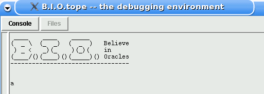
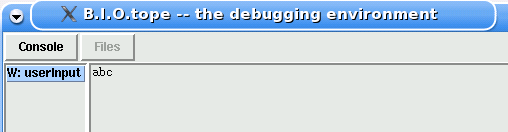
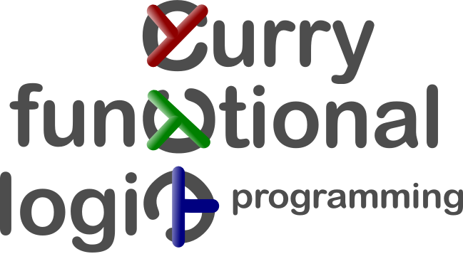

The Kiel Curry System (KiCS) is a compiler for the functional logic language Curry.1 It generates code in the functional language Haskell 2. KiCS makes use of some extensions of the Glasgow Haskell Compilation System (GHC)3 and requires a version greater or equal than 6.8.2 of that system. Currently, KiCS only works on unix based systems.
KiCS is divided into two parts: frontend and backend which are available separately. Prior to starting the installation process of any of the parts, make sure that the main binary of the Glasgow Haskell Compilation System (GHC)1 is contained in the search path and is equal or greater to the required version of 6.8.2.
Test this by typing:
$ ghc --version
You should get something like:
The Glorious Glasgow Haskell Compilation System, version 6.8.2
You should also have cabal4 installed.
The Curry frontend lives on hackage5. Therefore, the only thing you have to do to install it is:
$ cabal install curry-frontend
Make sure that the cabal directory for binaries is in your path, e.g., by
$ export PATH=~/.cabal/bin:$PATH
Note that you need to set the path for installation process only.
Test that you can access cymake now, e.g. by:
$ which cymake
/home/my_name/.cabal/bin/cymake
Instead of setting the path you can also change the information in the Makefile. You can change one or both of the two lines
GHCBIN = $(shell which ghc)
CYMAKEBIN = $(shell which cymake)
to
GHCBIN = path_to_ghc/bin
CYMAKEBIN = path_to_cabal_bin
The backend's source code is available from the internet.6 Make sure that both commands, ghc --version and which cymake give the desired output, cf. the prvious section.
Now unpack the tar ball and make it, e.g.:
$ gunzip kics_src.tgz
$ tar xf kics_src.tar
$ cd kics
$ make
If you want to use the b.i.o. debugger, cf. Section, you have to type additionally:
make bio
This procedure might take time (yes longer than building the main system.)
KiCSiThere are two main binaries build by the make process described in the previous section. The first is kics, a compiler from Curry to Haskell and the second is kicsi, an interactive environment for KiCS.
After the make process is finished start the kicsi binary which has been generated in the directory
path_to_where_you_unpacked_tarfile/kics/bin
You will get a prompt which looks something like this:
_ _ _ _
/\_\ /\ \ /\ \ / /\
/ / / _ \ \ \ / \ \ / / \
/ / / /\_\ /\ \_\ / /\ \ \ / / /\ \__
/ / /__/ / / / /\/_/ / / /\ \ \ / / /\ \___\
/ /\_____/ / / / / / / / \ \_\ \ \ \ \/___/
/ /\_______/ / / / / / / \/_/ \ \ \
/ / /\ \ \ / / / / / / _ \ \ \ The
/ / / \ \ \ ___/ / /__ / / /________ /_/\__/ / / Kiel
/ / / \ \ \ /\__\/_/___\/ / /_________\\ \/___/ / Curry
\/_/ \_\_\\/_________/\/____________/ \_____\/ System
Version 0.81893
>
At this prompt you can enter arbitrary Curry expressions to evaluate them, e.g.:
> 3+4
7
More?
As Curry is a functional logic language it has an integrated search for solutions. In the standard setting you will be asked whether you want the search to proceed to the next solutions. Typing anything but a word beginning with n will let the search proceed, either by printing the next solution or by the message that no further solution was found:
> 3+4
7
More?
No more Solutions
Another example has more than one solution:
> 3+(4?5)
7
More?
8
More?
No more Solutions
Apart from evaluating expressions, KiCSi supports a number of commands which all begin with typing a colon : before either using the short one letter version or the longer one. The following table subsumes the supported commands:
| Short | Long | Description |
|---|---|---|
:l <module>+ | :load | load some Curry modules |
:r | :reload | repeat last load command |
:a <module>+ | :add | add modules to list of loaded modules |
:t <expression> | :type | print type of expression |
:h, :? | :help | print some useful information |
:i | :info | print interface of loaded modules |
:set <setting> | change current settings (see below) | |
:s | :save | save settings to ~/.kicsrc (see below) |
:!<command> | execute command in shell | |
:q | :quit | exit KiCSi |
For the :load and :add command, all files and all modules the given modules depend upon will be compiled if necessary. The first module in the list will be the main module, e.g., for System.getProgName. After loading, the prompt will enumerate all modules that could be loaded.
There are two different kind of settings for KiCSi: switches and modes. A switch is a setting that can either be on or off. A mode is a selection within a greater range of options than just yes/no. All settings are generally changed by the :set command followed by at least one space and then a setter. If :set is not followed by a setter, a list of current settings is printed.
Each switch has a short, i.e, one letter, and a long name. Short names can be combined in ANSI command line style. For example, the command
:set +td-ef
is short for
:set +t
:set +d
:set -e
:set -f
As a result, long names for settings have to be preceded by a double switch indicator, e.g.:
:set ++time
which is the long version of
:set +t
The switches supported by KiCSi are:
| Short | Long | Description |
|---|---|---|
t | time | print elapsed time after evaluation |
e | eval | switch evaluation/compile mode |
d | debug | turn on debugging (Section B.i.O.) |
f | force | force recompilation of all KiCS-files |
Most often you will want to use +t together with -e. Otherwise you will include startup and compilation time for ghci in your measurement.
With +e, KiCSi will use the expression evaluation mode of GHC. The time until the evaluation is started will generally be shorter. With -e, KiCSi will create a binary (called request) via GHC. Compiling takes longer but overall performance increases.
With the flag force, the files generated by the frontend, are not recreated.
Modes are settings with more than a +/- range of alternatives. KiCSi supports the following modes, where the column "Mode" indicates the relation between the settings. For example, any setter effecting the "Strategy" after a :set df command overwrites that setting.
| Short | Long | Mode | Description |
|---|---|---|---|
df | depth first | Strategy | search strategy depth first |
bf | breadth first | Strategy | search strategy breadth first |
all | all solutions | Solutions | print list of all solutions |
first | first solution | Solutions | print first solution only |
i | interactive | Solutions | ask for more after each solution |
st | search tree | Strategy Solutions | print whole search tree |
path | search path for modules | ||
v | verbosity | output level for KiCS | |
cmd | command | command line options for executed program | |
rts | runtime settings for GHC | ||
rts+ | append rts instead of replace | ||
ghc | compile options for GHC | ||
ghc+ | append ghc instead of replace |
For the verbosity level of output, the range is from "0=be quiet" to "6=print all you can think of".
The option command is useful only in combination with the --eval switch (see the section on switches above) and if the program uses System.getArgs.
The run time settings (rts) effect, e.g., the stack and heap reserved for the execution. The settings will be included between +RTS and -RTS in the call to GHC.7
KiCSi supports the readline framework.8 As an additional feature KiCSi supports an initialization of the edit history. Upon start up, KiCSi will read a file kicsi.hist and add its content to the edit history. Expressions contained in the file will be enumerated beginning with 1, e.g., 3+4 could be added to the history as {-2-} 3+4 if it is the second expression in the file. This feature is useful for demonstrations using KiCSi. The presenter should also be accustomed to the standard readline features.
KiCSThe second main binary coming with the KiCS distribution is the compiler kics. It is used to generate binaries for Curry programs. Assume, for example, that you have a module MyCurryModule containing a function main of type IO (). Then you would write the following line to obtain an executable called test executing main.
kics -executable -o test MyCurryModule
Here is the full table of options for kics.
| Option | Description |
|---|---|
| -main | name of main function |
| -frontend | path to frontend binary |
| -kicspath | path to kics compiler |
| -userlibpath | path to curry libraries |
| -nouserlibpath | only standard curry libraries |
| -ghc | path to ghc |
| -make | chase imported modules |
| -nomake | do not chase imported modules |
| -executable | create executable |
| -noexecutable | do not create executable |
| -v | set verbosity level to n, e.g., -v 3 |
| -q | scarce output |
| -force | force recompilation |
| -noforce | do not force recompilation |
| -all df | print all solutions depth first |
| -all bf | print all solutions breadth first |
| -st | print solutions as search tree |
| -i df | interactively show solutions depth first |
| -i bf | interactively show solutions breadth first |
| -o | name of output file |
The KiCS system comes with a debugger called B.i.O. which is short for Believe in Oracles. To find out more about the oracle technique have a look at the corresponding papers.9 10.
Before you can start the debugger, remember that you have to execute make bio in addition to building KiCS, as explained in the section about the installation procedure.
B.i.O. supports two major modes. The first is an implementation of the well known declarative debugging method. The second is a step-by-step tracer allowing us to follow a program's execution as if the underlying semantics was strict, skipping uninteresting sub computations. In addition, the tool gives some support for finding bugs in programs employing I/O. Both modes are described in the following section.
The next pages exemplify the usage of B.i.O.. If you prefer a compact description of commands and options, jump ahead to the overview section.
Consider the following small example program containing an intentional error to demonstrate the declarative debugging mode.
module Example where
import Prelude hiding (length)
length [] = 0
length (_:xs) = length xs
fiblist x = fib x : fiblist (x+1)
fib :: Int -> Int
fib _ = error "this will not be evaluated"
The function fiblist creates a potentially infinite list of delayed calls to function fib. Due to laziness, fib is never evaluated in our example, so we omit its definition. The infinite list is cut to the first two elements by a call to function take, which is defined in the usual way. On top level, function length is applied to count the elements of the resulting list.
It is to be expected that the program returns the number 2.
> :l Example
Example> length (take 2 (fiblist 0))
0
We see that running the program reveals the result 0, which indicates that there must be a bug somewhere. Therefore, we switch on the debug mode and execute the program once again.
Example> :set +d
Example> length (take 2 (fiblist 0))
In the background, our example program and all the modules it depends on are transformed to new modules which are then compiled. This may take some time if you debug an expression in the context of a larger project. Don't worry; the next time you will debug within this project the startup will be much faster. Upon completion of the compilation processes the actual debugging session starts.
____ ____ _____
( _ \ (_ _) ( _ ) Believe
) _ < _)(_ )(_)( in
(____/()(____)()(_____)() Oracles
--------type ? for help----------
main
Initially, we only see a call to function main which was added by the system to refer to the expression we entered at the prompt in our example. Pressing i turns on inspect mode. In inspect mode, the result of every sub computation is directly shown and can be "inspected" by the user, i.e., rated as correct or wrong. Inspect mode therefore corresponds to the declarative debugging method. But as we will see in the next section, the display of results of sub computations can be turned on and off at any time. Of course, there is a help menu available, showing a list of all possible inputs.
After pressing i, the debugger evaluates the expression and displays the result.
main ~> 0
We expected main to have value 2, but the program returned value 0. Thus, we enter w (wrong) in order to tell the debugger that the result was wrong. The debugging tool stores this choice. As the value of main depends on several function calls on the right hand side of its definition, the tool now displays the first of these calls in a leftmost, innermost order:
fiblist 0 ~> _ : (_ : _)
The line above shows that the expression fiblist 0 has been evaluated to a list that has at least two elements. This might be correct, but we are not too sure, since this result depends strongly on the evaluation context. A "don't know" in declarative debugging actually corresponds to the skipping of sub computations in the step-by-step mode, as described in the next section. We therefore press s (skip).
take 2 (_ : (_ : _)) ~> [_,_]
Actually, this looks quite good. By entering c (correct) we declare that this sub computation meets our expectation. Now the following calculation is displayed:
length [_,_] ~> 0
The function length is supposed to count the elements in a list. Since the argument is a two-element list, the result should be 2, but it is actually 0. By pressing w we therefore state that this calculation is erroneous. Now the debugger asks for the first sub computation leading to this result:
length [_] ~> 0
This is also wrong, but for the sake of demonstration we delay our decision. By pressing the space bar (step into) we move to the sub expressions of length [_]. We now get to the final question:
length [] ~> 0
The length of an empty list [] is zero, so by pressing c (correct) we state that this evaluation step is correct. Now we have reached the end of the program execution, but a bug has not been isolated yet. We have narrowed down the error to the function call length [_,_], but still there are unrated sub computations which might have contributed to the erroneous result. The tool asks if the user wants to restart the debugging session re-using previously given ratings:
end reached. press 'q' to abort or any other key to restart.
After pressing <SPACE>, the debugger restarts and asks for the remaining function calls. There is only one unrated call left within the erroneous sub computation:
length [_] ~> 0
Now we provide the rating we previously skipped. After entering w (wrong) it is evident which definition contains the error:
found bug in rule:
lhs = length [_]
rhs = 0
A further interesting advantage of our approach to reexecute the program with a strict evaluation strategy is the possibility to include "virtual I/O".11 During the execution of the original program, all externally defined I/O-actions with non-trivial results, i.e., other than IO (), are stored in a special file. These values are retrieved during the debugging session. In addition, selected externally defined I/O-actions, e.g., putChar, are provided with a "virtual implementation". To show what this means, we demonstrate how the main action of the following program is treated by our debugging tool.
module IOExample where
import Prelude hiding (getLine)
getLine :: IO String
getLine = getChar >>= testEOL
testEOL :: Char -> IO String
testEOL c = if c=='\n' then return []
else getLine >>= \ cs -> return (c:cs)
main = getLine >>= writeFile "userInput"
As the example program contains user interaction, we also have to enter a line. We type abc for this demonstration.
Now the debugging tool is started, and we look at the first two single steps by typing <SPACE> twice. This is what the tool displays at this point:
main
getLine
getLine ~> getChar >>= testEOL
main ~> (getChar >>= testEOL) >>= writeFile "userInput"
initial action computed. press any key to execute it
In step-by-step mode, we only get to see results when a subcomputation is finished. The above lines mean that the evaluation of both, getLine and main is now complete. The results are partial calls of the bind operator (>>=) waiting for the world, so to speak. We press an arbitrary key to start the action followed by a <SPACE> to make one more single step and get:
getChar >>= testEOL
getChar
When we hit <SPACE> now, two things happen at once. First, the value 'a' is retrieved from the file and, second, a GUI called B.I.O.tope is started, which represents the virtual I/O environment. B.I.O.tope is told that someone has typed an a on the console, which is the "virtual I/O-action" we connected with getChar. The B.I.O.tope window is shown in the following picture.

Meanwhile, on the console we see the result of the call to testEOL 'a', which we skip by typing s.
testEOL 'a' ~> (getChar >>= testEOL) >>= testEOL_lambda 'a'
(getChar >>= testEOL) >>= testEOL_lambda 'a'
Admittedly, the expression testEOL_{}lambda 'a' shows that the source code binding is improvable. Now we wonder, whether or not the current sub computation is interesting. We type r to have a look at the result and get:
(getChar >>= testEOL) >>= testEOL_lambda 'a' ~> IO "abc"
This is fine, so we decide to skip the computation by pressing s. Note, that as soon as a result is shown, we can also rate the sub computation, i.e., tell the tool that this result is correct or wrong. This information will then be considered if we restart the debugging session in inspect mode as described in the previous section. It is also noteworthy that the virtual I/O commands are never issued twice, even if we had decided to go into the sub computation instead of skipping it.
The final action of our program is:
writeFile "userInput" "abc"
Executing this action brings another change to the B.I.O.tope as shown in the next picture. There we can see the GUI has switched to the file dialog. It contains a list of files which have been read (R:) or written (W:) during the debugging session and clicking a file in this list makes the file contents visible as they are at the current point of the debugging session.

B.i.O. supports the following commands where an entry in column "Restriction" means that the command is only available under certain conditions. For example, you can only rate a result as correct if B.i.O. actually shows the result of the current expression.
| Key | Restriction | Description |
|---|---|---|
s | - | skip current sub computation |
<SPACE> | - | step into current sub computation |
b | - | take back last command |
i | step mode | switch to inspect mode |
i | inspect mode | leave inspect mode, enter step mode |
r | step mode | show result |
c | result shown | rate the shown result as correct |
w | result shown | rate the shown result as wrong |
q | - | quit debugging session |
d | - | set max depth to print terms |
- | - | pressing (almost) any other key results in printing helpful hints. |
The skip command can also be understood as "don't know" in declarative debugging mode. For the back command you can take back your last decision, i.e., not the last setting, in arbitrary depth. Even if you are not currently doing declarative debugging, looking at the result with the result command might be useful in order to decide whether or not to enter into the current sub computation. For the depth-command, after pressing d you are supposed to enter a number and then hit <RETURN>. A depth of 0 means that there is no restriction to the terms shown.
A trusted function will not appear during debugging. All the functions in standard modules are trusted, for example.
For each module M you can add a file M.trust in the same directory. A .trust file contains the names of functions, possibly lead by a bang.
Let, for example, M contain functions f1, f2, f3. If you write in M.trust
!f1
f2
Then f1 is not trusted, while f2 is trusted.
The default for all functions is defined by the first entry in the trust file. If the first entry is lead by a bang then the default is that functions are trusted. If the first entry has no bang then the default is "not trusted". In the above example f3 is, therefore, trusted (and the second line superfluous). The reasoning is that you'd rather like to write the exceptions to the file than to repeat the usual case all over. Along the same line, an empty .trust file simply means: trust the whole module.
And sometimes one of the arguments of a function is just not interesting. Imagine a dictionary carried around at all times.
You can omit such arguments in a trust file like this
!mysuperfun _ x _ _ y
Now from the function "mysuperfun" you will only see the second and fifth argument. Actually, you will also see any remaining arguments if the function has more than five. Thus, you could also have written
!mysuperfun _ x _ _
for the same effect.
Don't worry about what to call x or y. Every string but _ will be interpreted as "I want to see this". Thus, its still the same to write:
!mysuperfun _ showmethismostimportantargumentatallcalls _ _
During debugging, trusted arguments are shown as green underscores (so that you won't confuse it with an unneeded argument).
Thanks for looking into KiCS and for any feedback, cheers blames or bug reports, contact me at .

This document has been generated by
Pandoc.
M. Hanus (ed.). Curry: An integrated functional logic language (vers. 0.8.2). Available at http://www.informatik.uni-kiel.de/~curry, 2006. ↩
S. Peyton Jones, editor. Haskell 98 Language and Libraries---The Revised Report. Cambridge University Press, 2003. ↩
http://www-ps.informatik.uni-kiel.de/~bbr/download/kics_src.tgz ↩
See http://www.haskell.org/ghc/docs/latest/html/users_guide/ for details ↩
B. Braßel, S. Fischer, M. Hanus, F. Huch, and G. Vidal. Lazy call-by-value evaluation. In Proceedings of the 12th ACM SIGPLAN International Conference on Functional Programming (ICFP'07), pages 265 -- 276, 2007. ↩
Bernd Braßel and Holger Siegel. Debugging Lazy Functional Programs by Asking the Oracle. In Olaf Chitil, editor, Proc. Implementation of Functional Languages (IFL 2007), Lecture Notes in Computer Science. Springer, 2008. ↩
Note that an installation of tcl/tk is needed to use virtual I/O. ↩